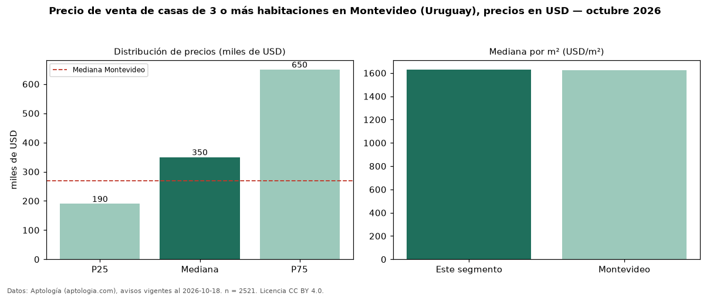

Precio de venta de casas de 3 o más habitaciones en Montevideo (Uruguay), precios en USD — octubre 2026
USD 350.000 es el precio mediano de casas de 3 o más habitaciones en venta en Montevideo (Uruguay) (n = 2.521 avisos). Eso es 30 % por encima de la mediana de todos los casas en venta de Montevideo (USD 269.000). Por metro cuadrado, la mediana es USD 1.630/m² (n = 2430 avisos con área). La mitad central de los avisos va de USD 190.000 a USD 650.000 (razón 3,4), una dispersión alta. Con el precio por m² de alquiler del mismo segmento (USD 16,00/m² al mes), la rentabilidad bruta implícita es 11,8 % anual (aproximación con medianas de ofertas distintas). El área mediana anunciada es 226 m². Datos: Aptología (aptologia.com), CC BY 4.0 — https://www.aptologia.com/uy/venta/montevideo. Archivos: PDF, CSV con las cifras y gráfica PNG.

| Avisos únicos | 2521 |
|---|---|
| Percentil 25 | COP 190.000 |
| Mediana | COP 350.000 |
| Percentil 75 | COP 650.000 |
| Mediana por m² | COP 1.630 |
Fuente: avisos vigentes de portales inmobiliarios recopilados por Aptología, deduplicados (mínimo 30 avisos únicos por celda). Precios pedidos, no cerrados. Fecha: 2026-10-18.